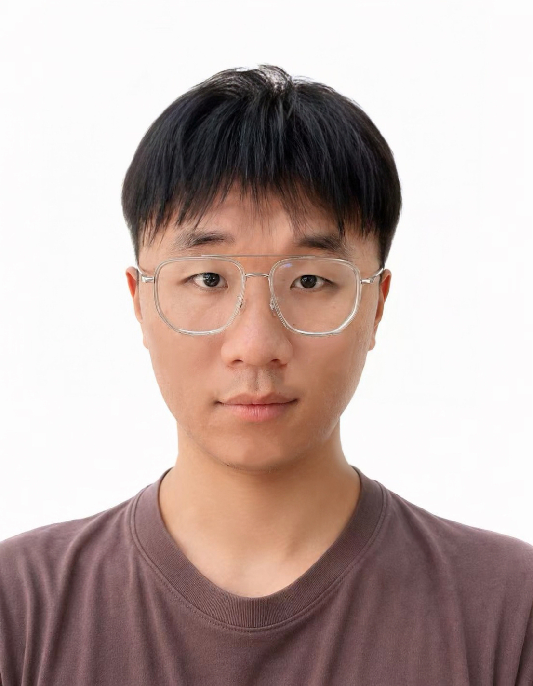

Weishun Liu (刘为顺)
I'm currently a graduate student at the University of Science and Technology of China (USTC), supervised by Prof. Wengang Zhou.
My research interests include multimodal large language models (MLLMs), visual understanding, and visual reasoning. My work focuses on building reliable multimodal models that connect visual evidence with language and reason over complex real-world scenes.

Selected research
Multimodal understanding and visual reasoning
Building models that connect visual evidence with language and structured reasoning, with applications in industrial anomaly detection.
Reinforcement learning for industrial systems
Studying reinforcement learning, domain knowledge injection, and active perception for reliable real-world decision making.
Education
- 2025 – Present M.S. in Information and Communication Engineering, University of Science and Technology of China · Supervisor: Prof. Wengang Zhou
- 2020 – 2024 B.Eng. in Electronic Information Engineering, Nanjing Tech University · Ranked 1st out of 68
Research experience
- 2021.09 – 2023.03 Optimal Scheduling Method for Water Plant Pump Station Pump Groups Based on Reinforcement Learning, Jiangsu Postgraduate Research and Practice Innovation Program (No. SJCX21_0486)
Selected publications
Publications will be added here as they become available. See the publications page for updates.
Honors and awards
- Outstanding Graduate of Nanjing Tech University 2024
- Shenzhen SOE Scholarship 2024